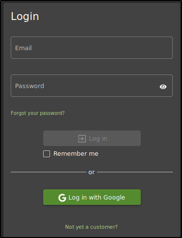
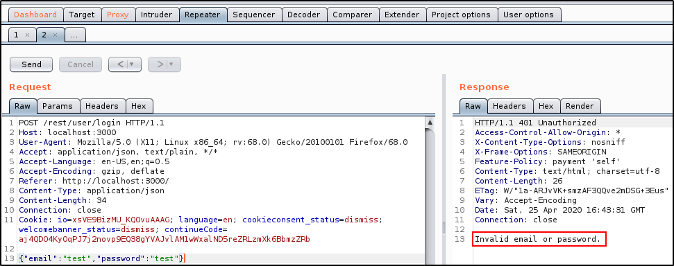

First of all, we need to select something for a SQL Injection, something related to the databsae..
Like a login page! 
To know more about the login, we should try to intercept a request:
we used a test:test combination to log in
(if not appearing, try to forward the request)
From here, send it to the Repeater: If we try to send it, will show an error message 
We can try for a SQL Injection:
Theory:
We can check if we are correct with Burp Suite:
We added a single quote after test
We can SQL Inject values over there!!!
As we can see, adding a single quote created a SQL error into the server DB as a response
(From a SQLite database)
And even the query, if we look further:
What if we go one step further for the SQL Injection:
If we can log in like that, we can log in as the first user:
usually the first user into the database is the Admin
Infact, if we try to log in with this query (into the email form):
Congratulations!!!
But in some cases, you SQL Injection can still work but not shown:
A good solution to know if your SQL Injection is working is to add a sleep command. In this way, the server will wait to respond you and you know that the SQL Injection is working